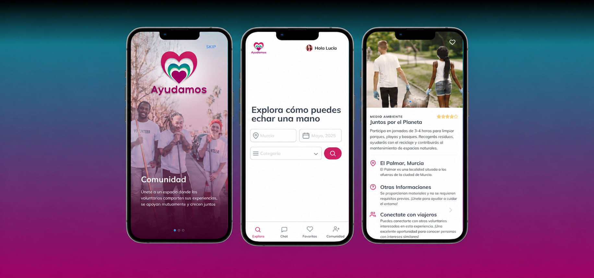
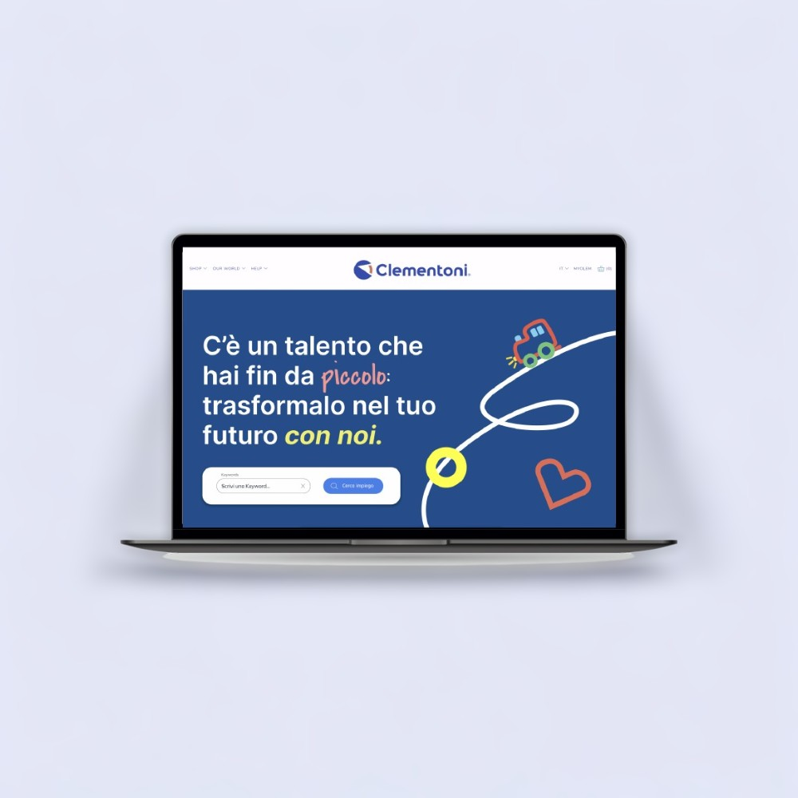
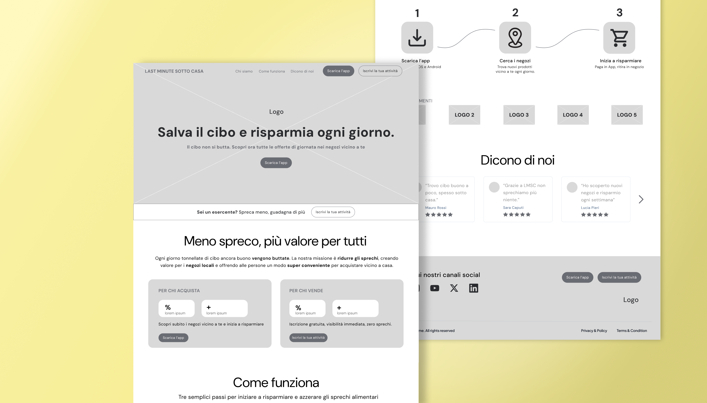
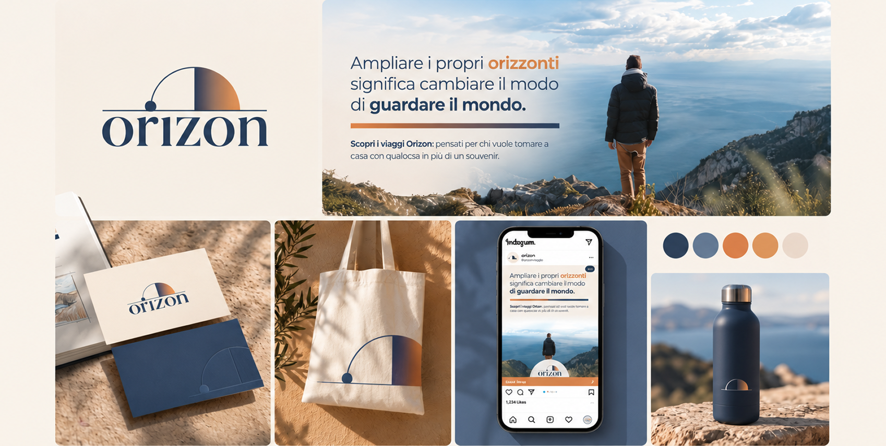

UX/UI Redesign · Website · 2026
Jojob
Piattaforma di carpooling per aziende, territori e persone.
Progetti
Progetti di UX/UI Design, ricerca, comunicazione e visual design sviluppati tra formazione, collaborazioni e progetti personali.
UX/UI Redesign · Website · 2026
Piattaforma di carpooling per aziende, territori e persone.

UX/UI Design · Mobile App · 2024
App di volontariato per connettere persone e ONG.

UX/UI Redesign · Website · 2025
Redesign della sezione "Lavora con noi" del sito web Clementoni.

UX Design · Wireframing · 2026
Progettazione wireframe per la nuova homepage di LMSC.

Branding · Visual Design · 2026
Branding per un progetto dedicato al turismo rigenerativo e consapevole.

Communication · Campaign · 2025
Campagna immatricolazioni per l'Università degli Studi di Urbino "Carlo Bo".
Dietro le quinte
Nel tempo libero, la curiosità e la voglia di mettermi in gioco mi hanno spinto a dare forma a due progetti per la mia città: un festival musicale e un format di dj set, seguendone organizzazione e progettazione grafica.